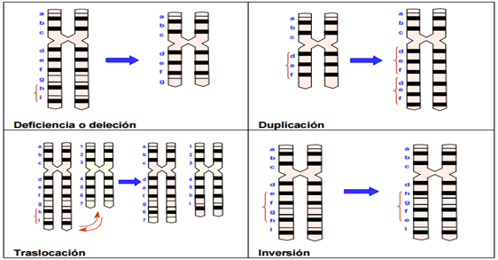

Son cambios producidos en la estructura normal de los cromosomas, sin cambiar su número. Cambia la secuencia de nucleótidos en el ADN y, por tanto, también el mensaje transcrito al ARNm. Se ven afectados segmentos más o menos grandes de los cromosomas, provocando cambios en su estructura, afectando a varios genes.
Si afectan al orden de los genes: inversiones y translocaciones.
Si afectan al número de genes: duplicaciones y deleciones.
Inversiones. Consiste en que un fragmento cromosómico ha girado 180º, por lo que su secuencia génica queda invertida respecto a la del resto del cromosoma.
Translocaciones. Consiste en el cambio de posición de un fragmento del cromosoma. La translocación se puede producir en un mismo cromosoma, en cromosomas homólogos o distintos.
Deleción. Se produce por la pérdida de un fragmento cromosómico, y por tanto, de los genes que contiene. Suelen ser letales en individuos homocigóticos.
Duplicación. Cuando se repite un fragmento cromosómico en el mismo u otro cromosoma.
